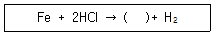

표면처리기능사 (2008-07-13 기출문제)
1과목: 금속재료일반
1. 다음 중 조일육방격자의 결정구조로 옳은 것은?
- FCC
- BCC
- FOB
- HCP
(정답률: 89%)

2. 고체 상태에서 하나의 원소가 온도에 따라 두 가지 이상의 결정 구조를 가지는 경우 각각의 상을 무엇이라고 하는가?
- 동소체
- 결정입체
- 천이금속
- 변태입자
(정답률: 88%)
3. 로크웰 경도시험시 C스케일을 사용할 때 경도값을 구하는 식은 HRC=100-500h이다. 압입 자국의 깊이가 0.1mm일 때의 경도값은 얼마인가?
- 30
- 40
- 50
- 60
(정답률: 69%)
4. 용융금속이 응고할 때 작은 결정을 만드는 핵이 생기고 이 핵을 중심으로 금속이 나뭇가지 모양으로 발달하는 것을 무엇이라 하는가?
- 입상정
- 수지상정
- 주상정
- 결정립
(정답률: 78%)
5. 0.2%C이하, 35∼36%Ni, 약 0.4%Mn이 함유된 Fe 합금인 합금으로 200℃ 이하에서의 선팽창 계수가 현저히 작으며, 줄자, 표준다, 시계추에 주로 사용되는 합금강은?
- 인바
- Y 합금
- 두랄루인
- 하이드로날륨
(정답률: 60%)
6. 다음 중 스프링강에 대한 설명으로 틀린 것은?
- 탄소함량에 따라 0.65∼0.85%C의 판 스프링과 0.85∼1.⑤%C의 코일 스프링으로 나눌수 있다.
- 스프링강은 탄성 한도가 높고 충격 및 피로에 대한 저항이 커야 한다.
- 경도는 HB 340 이상이며, 열처리된 조직은 소르바이트 조직이다.
- 담금질 온도는 1100∼1200℃에서 수냉이 적당하다.
(정답률: 79%)
7. 60%Cu+40%Zn으로 구성된 합금으로 조직은 α+β이며, 인장강도는 높으나 전연성이 비교적 낮고, 열교환기, 열간단조풍, 볼트, 너트 등에 사용되는 것은?
- 문쯔메탈
- 갈딩메탈
- 모넬메탈
- 콘스탄탄
(정답률: 82%)
8. 다음 중 형상 기억 합금에 관한 설명으로 틀린 것은?
- 열탄성형 마텐자이트가 형상 기억 효과를 일으킨다.
- 형상 기억 효과를 나타내는 합금은 반드시 마텐자이트 변태를 한다.
- 마텐자이트 변태를 하는 합금은 모두 형상 기억 효과를 나타낸다.
- 원하는 형태로 변형시킨 후에 원래 모상의 온도로 가열하면 원래의 형태로 되돌아간다.
(정답률: 84%)
9. 다음 중 냉간가공에 대한 설명으로 틀린 것은?
- 열간가공에 비해 변형이 쉽다.
- 열간가공에 비해 제품의 표면이 미려하다.
- 재결정 온도 이하의 가공을 냉간가공이라 한다.
- 열간가공 제품에 비해 제품의 치수 정도가 좋다.
(정답률: 79%)
10. 상온에서 비중이 약 2.7이며, 용융점이 약 660℃ 정도인 금속으로 기계부품, 항공기, 건축, 차량 등에 사용되는 것은?
- Fe
- Ni
- Mg
- Al
(정답률: 80%)
11. 재표표면상에 일정한 높이로부터 낙하시킨 추가 반발하여 튀어 오르는 높이로부터 경도값을 구하는 경도기는?
- 쇼어경도기
- 로크웰경도기
- 비커즈경도기
- 브리넬경도기
(정답률: 84%)
12. 다음 중 담금질에 의해 나타난 조직 중에서 경도와 강도가 가장 높은 것은?
- 오스테나이트
- 소르바이트
- 트루스타이트
- 마텐자이트
(정답률: 86%)
13. 페록실 시험(Ferroxyl test)에 사용되지 않는 약품은?
- 페록시안칼륨
- 염화나트륨
- 염화암모늄
- 질산
(정답률: 88%)
14. 전기도금 직전에 소재의 표면을 도금액의 ph에 맞추는 처리를 무엇이라 하는가?
- 탈지
- 중화처리
- 탈청
- 활성화 처리
(정답률: 84%)
15. 도금액 중의 유기불순물은 보통 어떤 방법으로 제거하는가?
- 냉각처리
- 약품처리
- 약전해처리
- 활성탄 처리후 여과
(정답률: 77%)
16. 다음 중 헐셀시험에 대한 설명이 틀린 것은?
- 헐셀시험에서 음극은 황동판, 철판을 사용하며 두께 0.5mm 정도가 적당하다.
- 헐셀시험의 중요한 장점은 도금층의 현상과 도금액 사고의 예측이다.
- 음극시험편 크기는 100mm×63mm가 적당하며 도금후 연마해서 재사용할수록 좋다.
- 양극과 음극거리의 간격에 따라 적정 전류밀도에 의한 도금상태를 조사한다.
(정답률: 77%)
17. 다음 중 약품 보관 방법에 대한 설명으로 틀린 것은?
- 사용 후에는 반드시 마개를 닫아 보관한다.
- 산과 알칼리는 같이 놓아두어서는 안된다.
- 불산은 반드시 유리병에 보관하여야 한다.
- 액체 약품은 될 수 있는대로 선반 위에 놓아두어서는 안된다.
(정답률: 80%)
18. 도금공정에서 매 공정의 중간에 시행하는 매우 중요한 작업은?
- 탈지
- 탈청
- 산세
- 수세
(정답률: 87%)
19. 염산을 사용한 산세작업시 생기는 반응식에서 ( )안에 알맞은 화학식은?

- Fe
- FeCl2
- 2FeCl
- FeCl
(정답률: 73%)
20. 광택 니켈 도금에서 와트액(watts bath)의 성분이 아닌 것은?
- 황산니켈
- 에틸알콜
- 염화니켈
- 붕산
(정답률: 59%)
2과목: 전기도금
21. 도금층의 내식성을 평가하는 방법이 아닌 것은?
- 광택도 시험
- 페록실 시험
- 염수분무 시험
- 캐스 시험
(정답률: 75%)
22. 아연도금에서 시안욕과 비교한 징케이트욕의 설명으로 틀린 것은?
- 거친 도금이 되기 쉽다.
- 광택범위가 넓다.
- 액의 안정성이 높다.
- 액의 관리가 용이하다.
(정답률: 60%)
23. 과잉의 산세로 인해 철이 용해하여 생긴 흑색 분말은?
- 슬래그(Slag)
- 러스트(Rust)
- 스머트(Smut)
- 스팽글(Spangle)
(정답률: 72%)
24. 수산화나트륨(NaOH) 수용액 1L 속에 수산화나트륨이 40g 녹아 있으면 물농도는 얼마인가? (단, 수산화나트륨 분자량은 40이다.)
- 0.1M
- 1M
- 0.5M
- 2M
(정답률: 74%)
25. 다음 중 걸이(rack)가 갖추어야 할 조건을 설명한 것으로 틀린 것은?
- 도금의 두께가 균일하게 되도록 설계하여야 한다.
- 심함 공기교반에도 견딜 수 있도록 견고하여야 한다.
- 전류를 흘릴 때, 걸이가 과도하게 뜨거워지거나 녹아 떨어지지 않아야 한다.
- 걸이의 고리는 제품을 고정하는 역할을 하는 것으로 전기 전도율이 좋이 않아야 한다.
(정답률: 91%)
26. 다음 중 도금액의 계면활성제에 대한 설명으로 옳은 것은?
- 유리를 물에 적실 때 계면활성제를 넣으면 유리에 물이 잘 묻지 않는다.
- 계면활성제는 금속의 틈 사이로 물이 들어가는 것을 방지한다.
- 물이 반발하는 힘, 즉 표면장력은 계면활성제가 첨가되면 낮아진다.
- 금속표면의 오염제거를 신속히 하기 위해서는 계면활성제를 첨가하지 않는다.
(정답률: 69%)
27. 스테인리스강의 전해연마에 가장 많이 쓰이는 액성분으로 옳은 것은?
- 인산, 황산, 글리세린, 크롬산
- 과염소산, 무수아세트산
- 인산, 옥살산, 젤라틴
- 인산, 염산
(정답률: 50%)
28. 도금액 조제에 사용되는 약품 중 주성분의 역할이 아닌 것은?
- 양극용해를 좋게 한다.
- 음극에서는 금속이 석출된다.
- 양극에서는 금속이온을 공급한다.
- 도금액 중에서 금속이온을 공급한다.
(정답률: 45%)
29. 공업용 크롬도금에서 도금 전에 역전해 처리를 하는 가장 큰 이유는?
- 광택 향상을 위해서
- 밀착성 향상을 위해서
- 균일 산화성 향상을 위해서
- 균일 침탄성 향상을 위해서
(정답률: 65%)
30. SRHS(self regulating high speed) 도금액의 주성분이 아닌 것은?
- 무수 크롬산
- 황산 스트론튬
- 아세트산 바륨
- 규플루오르화 칼륨
(정답률: 64%)
31. 도금액의 조성이 시안화은칼륨, 시안화칼륨, 탄산칼륨이며 광택제로 이황화탄소를 사옹하여 각종 장식품, 전자기기 부품 등에 사용하는 도금은?
- 은도금
- 구리도금
- 니켈도금
- 로듐도금
(정답률: 89%)
32. 용액이 오염되거나 양극 슬라임이 용액 중에 있다가 도금시 달라붙어 생긴 결함은?
- 피트
- 표면 거칠음
- 광택 불균일
- 밀착 불량
(정답률: 36%)
33. 다음 중 다이엘 전지에 대한 설명으로 옳은 것은?
- 아연판은 (+)극이다.
- (-)극에서 수소기체가 발생한다,
- 아연판에서 산화반응이 일어난다.
- 전자는 구리판에서 아연판으로 이동한다.
(정답률: 54%)
34. 전기분해를 이용한 응용 분야가 아닌 것은?
- 용융도금
- 용융염의 전해
- 전기도금
- 금속의 전해정련
(정답률: 71%)
35. 음극전극으로 사용했을 때 수소 과전압이 가장 작은 것은?
- 백금
- 니켈
- 구리
- 아연
(정답률: 63%)
36. 약산과 그 염의 용액, 또는 약염기와 그 염의 용액은 산이나 염기를 조금 넣어도 ph가 변하지 않고 본래의 수소이온농도를 유지하려고 하는데, 이러한 용액을 무엇이라고 하는가?
- 표준 용액
- 혼합 용액
- 완충 용액
- 전해질 용액
(정답률: 65%)
37. 다음 중 전해질에 대한 설명으로 옳은 것은?
- 용액속에서 이온으로 전리되는 물질을 비전해질이라 한다.
- 전해질이 양이온과 음이온으로 분리되는 것을 전리라 한다.
- 아세트산, 황화수소 등 일부분만이 전리하는 물질을 강전해질이라 한다.
- 산, 염기와 같이 전기를 잘 전도하고 전기분해되는 화합물을 비전해질이라 한다.
(정답률: 79%)
38. 금속의 이온화 경향을 대한 설명으로 틀린 것은?
- 금속이 전자를 잃기 쉬운 경향의 순서이다.
- 이온화 경향은 전기 음성도와 일치하는 순서를 지닌다.
- 이온화 경향이 클수록 귀한(noble) 금속 즉, 귀금속이라 한다.
- 이온화 경향의 큰 순서는 K > Ca > Na > Al 순이다.
(정답률: 80%)
39. 다음 중 아보가드로의 수로 옳은 것은?
- 6.023×1023
- 6.023×10-23
- 3.75×1023
- 3.75×10-23
(정답률: 73%)
40. 1쿨롱의 전기량에 의해 화학변화를 일으킨 물질의 양을 그 물질의 무엇이라 하는가?
- 원자당량
- 전기당량
- 이온당량
- 전기화학당량
(정답률: 62%)
3과목: 특수도금
41. TCE(Trichloroethylene)탈지 작업시에 유의해야 할 사항으로 틀린 것은?
- 고온 상태에서 물이 들어가지 않도록 한다.
- 배기 설비가 잘 된 곳에서 작업을 한다.
- 마스크를 착용하면 연속작업도 가능하다.
- 눈이나 피부에 접촉되지 않도록 한다.
(정답률: 80%)
42. 탄소강, 합금강 및 철계 소결 부품에 알루미늄을 침투시키는 처리법은?
- 세러다이징
- 칼로라이징
- 실리코나이징
- 크로마이징
(정답률: 62%)
43. 금속 용사로 코팅을 할 때 표면을 적당히 요철을 만들어 주는 이유는?
- 포면의 광택도를 향상시키기 위하여
- 코팅 밀착성을 향상시키기 위하여
- 표면 경화성을 향상시키기 위하여
- 표면의 내식성을 향상시키기 위하여
(정답률: 57%)
44. 다음 중 내식성 시험방법이 아닌 것은?
- 유공도시험
- 코로드코오트시험
- 염수분무시험
- 스파이럴응력시험
(정답률: 65%)
45. 염소산염, 과염소산염, 과망간산염과 공존하면 위험한 약품은?
- 황산
- 암모니아
- 과산화수소
- 알칼리토류 금속
(정답률: 78%)
46. 다음 중 화성피막의 용도가 아닌 것은?
- 방청용과 내마멸용
- 광학용과 책표지 바탕용
- 도장 바탕용 또는 비닐코팅 바탕용
- 소성가공할 때의 윤활을 위한 도장 바탕용
(정답률: 63%)
47. 알루미늄 양극 산화시 염색하려는 산화피막의 조건이 아닌 것은?
- 피막자체의 색깔이 적합해야 한다.
- 피막의 기공이 적고, 흡착력이 적어야 한다.
- 짙은 색조를 얻으려면 특히 피막의 두께가 두꺼워야 한다.
- 피막표면에 굵힌 자국이나 피트 같은 흠이 없어야 한다.
(정답률: 20%)
48. 다음 중 양극 산화처리법에 해당되지 않는 것은?
- 황산법
- 염산법
- 수산법
- 크롬산법
(정답률: 40%)
49. 파커라이징(Parkerizing)용액 속에 구리 이온이나 질산염 등을 첨가하여 화성피막처리 시간을 단축시틴 방법을 무엇이라고 하는가?
- 본데라이징(Bonderizing)
- 아노다이징(Anodizing)
- 보로나이징(boronizing)
- 템퍼칼라(Temper Color)
(정답률: 69%)
50. 다음 중 플라스틱 도금의 전처리 약품과 관계없는 것은?
- PbSO4
- SnCl2
- CrO3, H2SO4
- PdCl2, AgNO3
(정답률: 54%)
51. 인산염처리시 피막형성을 촉진시키기 위해서 아연 또는 망간 인산염 및 인산 외에 특수 첨가제를 넣는데 이에 적합하지 않은 것은?
- 케로신
- 아질산염
- 질산염
- 염산염
(정답률: 58%)
52. 다음 중 인산염 피막의 처리방법이 아닌 것은?
- 스프레이법
- 침지법
- 용융법
- 브러싱법
(정답률: 67%)
53. 통상적인 폐수처리로 침강분리된 도금오니의 제거처리 순서로 옳은 것은?
- 농축 → 탈수 → 건조 → 소각
- 탈수 → 농축 → 건조 → 소각
- 농축 → 건조 → 소각 → 탈수
- 건조 → 탈수 → 농축 → 소각
(정답률: 74%)
54. 무전해 구리도금에서 도금액의 성분에 따른 그 역할이 옳게 짝지어진 것은?
- 수산화나트륨 - 환원제
- 에틸렌글리콜 - 촉진제
- 티오요소 - 안정제
- 탄산나트륨 - 계면활성제
(정답률: 70%)
55. 용융아연 도금욕의 조성시 알루미늄을 첨가하는 목적이 아닌 것은?
- 도금의 광택을 향상시키기 위하여
- 합금층의 발달을 저지시키기 위하여
- 유동성을 향상시키기 위하여
- 용융점을 저하시키기 위하여
(정답률: 50%)
56. 다음은 양극 산화처리 공정을 5가지로 나타내었다. 이 5가지의 순서가 옳은 것은? (단, 공정 중의 일부는 생략된 것임.)
- 전처리 → 양극산화처리 → 착색 → 봉공처리 → 건조
- 전처리 → 착색 → 양극산화처리 → 봉공처리 → 건조
- 전처리 → 양극산화처리 → 봉공처리 → 착색 → 건조
- 전처리 → 봉공처리 → 양극산화처리 → 착색 → 건조
(정답률: 79%)
57. 무전해니켈 도금액의 ph를 측정하니 ph 값이 4이었다. 도금액의 수소이온농도[H+]는 몇 M인가?
- 0.1
- 0.01
- 0.001
- 0.0001
(정답률: 60%)
58. 10×5cm의 얇은판 8개의 양면을 한꺼번에 도금하는데 60A를 흘렸을 때 전류밀도는 몇A/dm2인가? (단, 두께는 무시한다.)
- 3.5
- 5.5
- 7.5
- 12.5
(정답률: 71%)
59. 플라스틱 성형품의 정면처리가 잘 되었는지 시험하는 방법은?
- 진한 질산에 넣어서 표면에 균열이 생겼는지 확인한다.
- 순수한 아세트산에 1∼2분 침지한 뒤 균열과 백화현상이 나타났는지 확인한다.
- 유용성 염료를 칠해서 3분이 지난 뒤 착색이 되었는지 확인한다.
- 염화나트륨 수용액에 침지하여 표면에 흰 결정이 생겼는지 확인한다.
(정답률: 74%)
60. 다음 중 인산염 처리욕의 조성 중 공통으로 적용되는 것은?
- H3PO4
- NaCO3
- MgO, MnO
- FeCO3, H2O
(정답률: 50%)
조일육방격자의 결정구조가 HCP인 이유는, 이 구조가 가장 밀도가 높은 구조 중 하나이기 때문입니다. HCP 구조는 원자들이 쌓여서 만들어지는 삼각형 모양의 격자를 가지고 있으며, 이 구조는 FCC와 BCC 구조보다 더 밀도가 높습니다. 따라서, 조일육방격자의 결정구조는 HCP입니다.